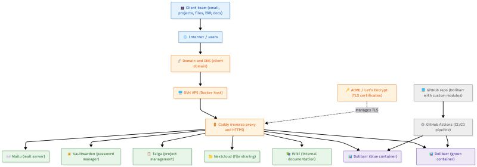
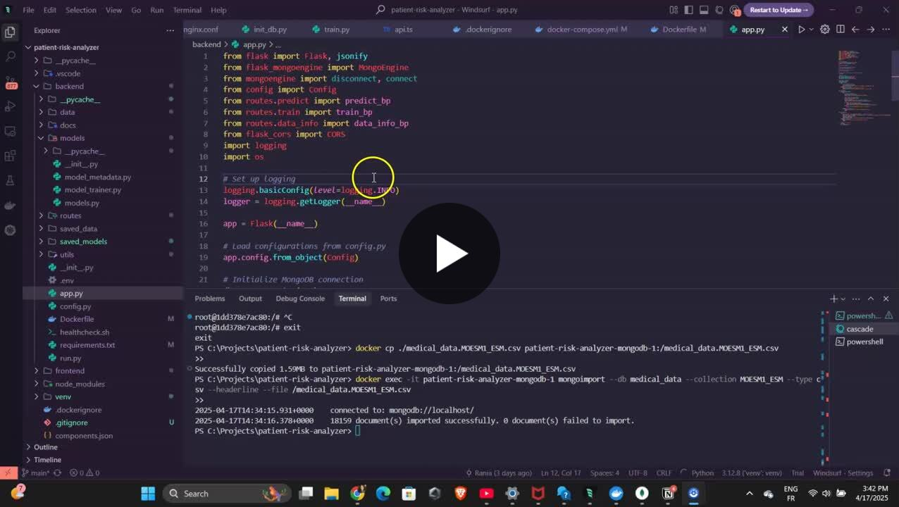

Travaux
Projets sélectionnés
Kubernetes GitOps auto-réparant
Pipeline GitOps complet avec autoréparation automatisée. ArgoCD synchronise l'état du cluster avec Git ; Prometheus détecte les pods dégradés et déclenche des workflows de récupération automatique.
Voir sur GitHub →
ClaimBase — Extraction de revendications scientifiques
Pipeline d'extraction de revendications scientifiques à partir d'articles arXiv (jeu de données unarXive), avec annotation manuelle d'un échantillon de référence. Socle du projet de recherche WP1 mené avec ScaDS.AI / TU Dresden.
Voir sur GitHub →
Pipeline CI/CD — Analyse de sentiments BERT
Pipeline CI/CD de niveau production pour une API d'analyse de sentiments basée sur BERT. Lint, tests automatisés, build Docker et scan de sécurité Trivy à chaque push, orchestrés via GitHub Actions.
Voir sur GitHub →

Stack DevOps auto-hébergée sur VPS
Stack auto-hébergée complète sur un VPS OVH avec Docker : Caddy en reverse proxy avec HTTPS automatique (Let's Encrypt), serveur mail Mailu (SPF/DKIM/DMARC), Vaultwarden, Nextcloud, Taiga, wiki interne et ERP/CRM Dolibarr déployé en blue/green via GitHub Actions.
Voir le post LinkedIn →

Pipeline MLOps — Prédiction de durée de séjour
Pipeline MLOps de prédiction et de réentraînement de modèles pour estimer la durée de séjour (LOS) des patients, conçu pour aider les hôpitaux à optimiser la gestion des lits et des coûts. Présenté à la Journée Scientifique LR-RISC de l'ENIT, avec Rayan Gharbi, sous la supervision du Dr Soumaya Meherzi.
Voir le post LinkedIn →
Patient Risk Analyzer — Prédiction de durée de séjour
Application web complète prédisant la durée de séjour de patients victimes d'AVC ischémique. Backend Flask avec un modèle XGBoost, tableau de bord React/TypeScript, MongoDB pour les données patients, visualisations SHAP pour expliquer les prédictions, le tout conteneurisé avec Docker.
Voir sur GitHub →
API de prédiction du risque cardiaque
API Flask + React prédisant le risque de crise cardiaque à partir de données de santé, avec un modèle Random Forest entraîné sur des données Kaggle, prétraitement (standardisation, encodage one-hot) et réponse JSON structurée affichée dans une interface React.
Voir sur GitHub →

Étude de sécurité Wi-Fi — Vulnérabilités & contre-mesures
Étude approfondie des réseaux Wi-Fi : évolution des standards, vulnérabilités WEP/WPA, et démonstrations éthiques avec Kali Linux et un adaptateur Alfa Wi-Fi (attaque Evil Twin, génération de wordlists avec Crunch, cassage WPA2 par force brute). Recommandations : chiffrement fort, mises à jour régulières et sensibilisation des utilisateurs.
Voir le post LinkedIn →